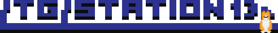

Settings
This setting is overwritten by your accessibility settings (prefers-reduced-motion).
Your preferences are saved between sessions in Local Storage. This is similar to cookies.

You can shift-click a server to auto-join the next round.
What is Space Station 13
Space Station 13 is a paranoia-laden round-based roleplaying game set against the backdrop of a nonsensical, metal death trap masquerading as a space station, with charming spritework designed to represent the sci-fi setting and its dangerous undertones. Have fun, and survive!
Servers
Standard Servers
Themed Servers
Special Servers